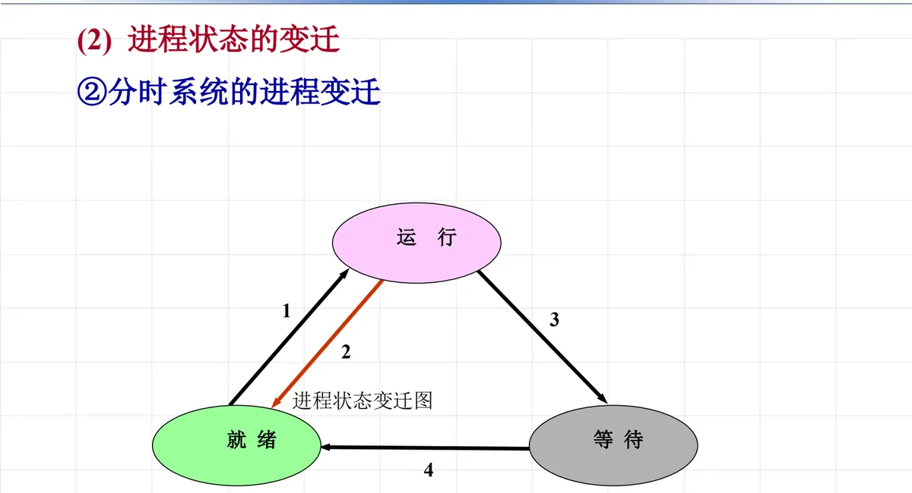
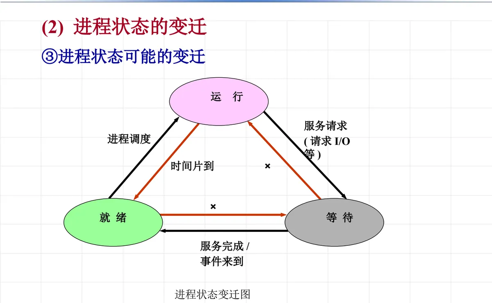
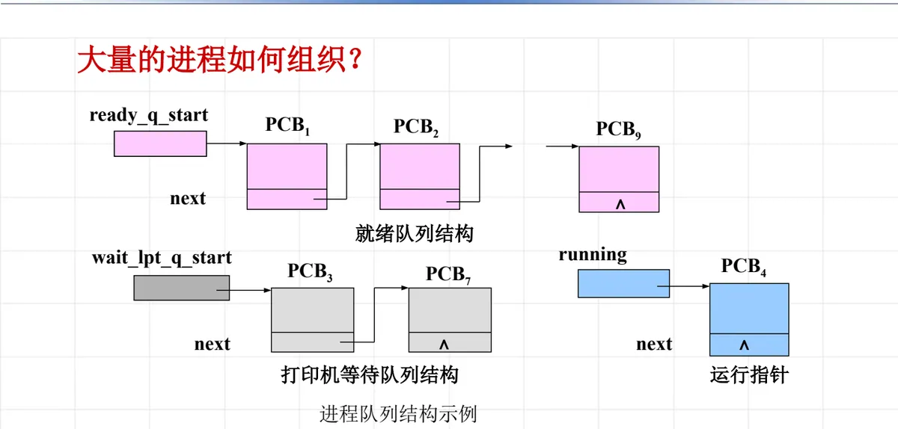

操作系统原理 · 第 4 章 进程及进程管理
4.2 进程概念
上一节留下的三个问题——与时间有关的错误、程序与计算不再一一对应、并发进程之间的相互制约——都指向同一个结论：程序这个概念已经不够用了。为了动态地反映程序的活动和状态的变化，操作系统引入了进程。这一节回答四个问题：为什么要引入进程、进程是什么以及它与程序有什么区别、进程有哪些状态和状态如何变迁、进程在内核里用什么数据结构来描述和组织。
1. 为什么要引入进程
回到上一节的线索，引入进程的原因有三条：
- （1）提高资源利用率的要求导致程序并发执行；
- （2）程序段的并发执行可以有任意的组合情况，为了保证并发程序的正确性、避免与时间有关的错误，并发程序之间存在同步和互斥的约束。这些运行时的约束是通过阻塞／唤醒程序来实现的，于是程序就不停地处于「运行／暂停／运行……」的状态；
- （3）一个程序可以同时多次运行，每次运行的情况可能都不一样。
基于以上原因，静态的「程序」概念已经不足以描述这种不断变化的执行过程。为了动态地反映程序的活动和状态的变化——运行 → 暂停 → 运行——操作系统引入了新的概念：进程。
2. 进程的定义及其与程序的区别
进程是支持并发作业的操作系统中最基本、最重要的概念，现代操作系统的设计都是建立在进程的基础上。简单说，进程就是程序的一次执行过程，它是能独立运行、参与资源竞争的活动单位。
进程与程序的区别可以归结为四点：
- ① 程序是指令的有序集合，是静态的概念；进程是程序的一次执行过程，是动态的概念；
- ② 进程是一个独立运行的活动单位；
- ③ 进程是竞争系统资源的基本单位；
- ④ 一个程序可以对应多个进程，而一个进程一定包含一个程序。
第 ④ 条最值得琢磨：同一个程序被多次启动，就会形成多个进程，它们各有各的进度、数据和状态——这正是「程序与计算不再一一对应」的正面表述，也是操作系统必须为每次执行单独建立一套描述信息的原因。
3. 进程的状态
（1）进程的基本状态
一个进程在生命周期中至少要具备三种状态：
- 运行状态（running）：该进程已获得运行所必需的资源，它的程序正在处理机上执行；
- 等待状态（wait）：进程正等待着某一事件的发生而暂时停止执行。这时，即使给它 CPU 控制权，它也无法执行；
- 就绪状态（ready）：进程已获得除 CPU 之外的运行所必需的资源，一旦得到 CPU 控制权，立即可以运行。
等待与就绪的区别是这一节最容易混淆的地方：等待是「缺事件」，就绪是「只缺 CPU」。等待中的进程缺的是 I/O 完成、信号到来这类外部条件，条件不到，给它 CPU 也用不上；就绪进程万事俱备，只等被调度选中。
（2）进程状态的变迁
三种状态之间由四类事件驱动，来回转换：
- 运行 → 等待：进程发出服务请求（如请求 I/O 等），需要等待外部事件完成；
- 等待 → 就绪：服务完成或事件来到，进程重新具备运行条件；
- 就绪 → 运行：进程调度选中了它，把 CPU 分配给它；
- 运行 → 就绪：时间片到（在分时系统中），或者被更高优先级的进程抢占。

把变迁条件标全，就是下面这张更完整的图：

4. 进程描述
（1）进程的组成
一个进程由程序代码和一组记录其动态特征的数据结构组成：
- 代码段：描述进程本身所应完成的功能；
- 数据段：进程使用的数据；
- 堆：用于动态分配的数据；
- 栈：用于函数调用和参数传递；
- PCB：进程控制块（Process Control Block）。
前四项合起来就是「代码与数据」，第五项是操作系统为进程建立的描述信息，二者共同构成一个进程。
（2）什么是进程控制块
PCB 是描述进程的动态特征、进程与其他进程和系统资源的关系的数据结构，是操作系统标识一个进程以及判断进程存在的唯一标识——进程与 PCB 一一对应。操作系统要管理进程、要让它参加调度、要保存和恢复它的运行现场，靠的都是 PCB。
（3）进程控制块的主要内容
- ① 进程标识符：进程名或内部 id 号；
- ② 进程当前状态：本进程目前处于何种状态；
- ③ 当前队列指针 next：登记处于同一状态的下一个进程的 PCB 地址；
- ④ 进程优先级：反映进程要求 CPU 的紧迫程度；
- ⑤ CPU 现场保护区：当进程由于某种原因释放处理机时，CPU 现场信息被保存在 PCB 的该区域中；
- ⑥ 通信信息：进程间进行通信时所记录的有关信息；
- ⑦ 家族联系：指明本进程与家族的联系；
- ⑧ 占有资源清单。
这些项目各有分工：①②标识「我是谁、我在什么状态」，③④服务于调度和队列管理，⑤保证进程再次被调度时能从断点继续运行，⑥⑦⑧描述它与别的进程、与系统资源的关系。
5. 大量进程如何组织：进程队列
系统中同时存在大量进程，操作系统不可能逐个扫描，于是用队列把处于同一状态的进程串起来——这正是 PCB 中「当前队列指针 next」的用处。就绪队列用 ready_q_start 指向队首的 PCB1，PCB1 的 next 指向 PCB2，如此链到 PCB9；等待打印机的那批进程则挂在以 wait_lpt_q_start 为首的打印机等待队列上（PCB4、PCB3、PCB7……）；运行进程由指针 running 直接指出。

这样一来，状态变迁就落实为队列操作：进程状态改变时，把它从原队列摘下来、挂到新队列上去；进程调度则是在就绪队列里挑一个送给 CPU。
本节小结
- 引入进程的三条原因：提高资源利用率导致程序并发执行；并发程序之间有同步和互斥约束、靠阻塞／唤醒实现，程序不断处于运行／暂停／运行的状态；一个程序可以同时多次运行、每次情况可能不同。静态的程序概念已不足以描述这些变化。
- 进程是程序的一次执行过程，是动态概念；程序是指令的有序集合，是静态概念。进程是独立运行的活动单位，也是竞争系统资源的基本单位；一个程序可对应多个进程，一个进程一定包含一个程序。
- 进程至少有运行、等待、就绪三种基本状态：运行是已获得全部资源正在处理机上执行，等待是缺事件（给 CPU 也无法执行），就绪是只缺 CPU（一旦得到即可运行）。
- 状态变迁由四类事件驱动：服务请求（运行→等待）、服务完成／事件来到（等待→就绪）、进程调度（就绪→运行）、时间片到（运行→就绪）。
- 进程由代码段、数据段、堆、栈和 PCB 组成；PCB 描述进程的动态特征以及它与别的进程和系统资源的关系，是操作系统标识进程和判断进程存在的唯一标识，与进程一一对应。
- PCB 的主要内容包括进程标识符、当前状态、队列指针 next、优先级、CPU 现场保护区、通信信息、家族联系和占有资源清单；大量 PCB 按状态用队列组织（就绪队列、各类等待队列），由运行指针指出当前运行进程。